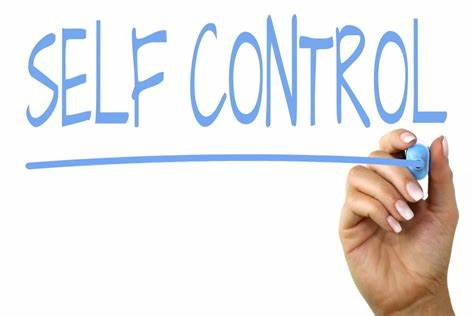

SELF
4 .SELF CARE
It’s so important to make sure you take good care of your body, mind, and soul every day, not just when you get sick.
Learning how to eat right, reduce stress, exercise regularly,
and take a time-out when you need it are touchstones of self-care and can help you stay healthy, happy, and resilient.
5 .SELF CONTROL
Psychologists typically define self-control as:2
The ability to control behaviors to avoid temptations and achieve goals
The ability to delay gratification and resist unwanted behaviors or urges
A limited resource that can be depleted
Setting goals to exercise regularly, eat a balanced diet, be more productive, give up bad habits,
and save money are just a few actions requiring self-control. More examples of self-control include:
Avoiding social media when you are at work so that it doesn't hurt your productivity
Not purchasing something you want because you are trying to stick to a budget
Skipping sweet treats because you are trying to reduce your sugar intake
Managing your emotional response when someone does something that makes you feel angry or upset
